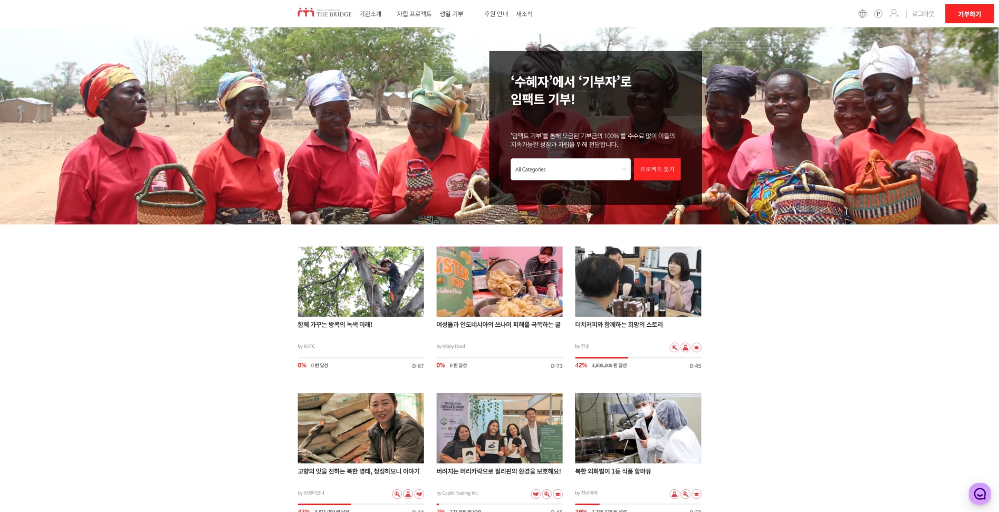

← Project Archive

03 / Experience · 2023—2024
기부의 마지막까지 데이터를 잇다.
웹사이트를 React로 리뉴얼하고, 외부 결제 페이지에서 끊기던 분석 데이터를 PG사와 협업해 전체 기부 흐름으로 연결했습니다.
- Role
- 프론트엔드 개발자
- Period
- 2023.09 — 2024.05
- Stack
- React · TypeScript · Zustand · GA
- Scope
- 리뉴얼 · 인증 · 기부 · 분석 추적
Project Flow
- 01CAMPAIGN DISCOVER
- 02DONATION FLOW
- 03EXTERNAL PG
- 04GOOGLE ANALYTICS
01 / Problem
결제는 완료되지만, 전환 데이터는 외부 PG에서 끊겼습니다.
사용자는 캠페인을 탐색한 뒤 외부 결제 페이지로 이동했습니다. 이 구간에서 Google Analytics 추적이 이어지지 않아 전체 기부 여정을 연속적으로 파악하기 어려웠습니다.
02 / Build
사용자 흐름과 측정 흐름을 함께 설계했습니다.
- 기존 웹사이트를 React와 TypeScript 기반으로 리뉴얼했습니다.
- Zustand로 인증 상태를 관리하고 로그인부터 캠페인 탐색·기부까지 구현했습니다.
- 외부 PG 결제 구간에서 추적이 끊기는 지점을 확인했습니다.
- PG사와 협업해 결제 페이지에 더 브릿지의 GA 추적 설정을 반영했습니다.
03 / Result
사이트 밖으로 이어지는 결제까지 하나의 전환 흐름이 됐습니다.
End-to-end
캠페인 탐색부터 외부 결제까지 전체 기부 플로우의 데이터를 연속 수집했습니다.
Cross-team
웹사이트 코드만으로 해결할 수 없는 문제를 PG사와의 협업으로 마무리했습니다.
